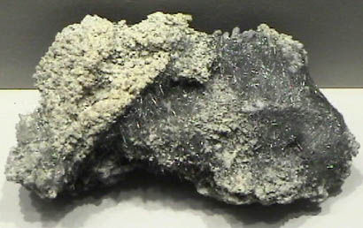
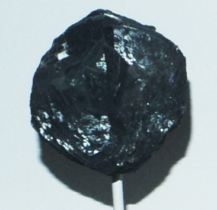
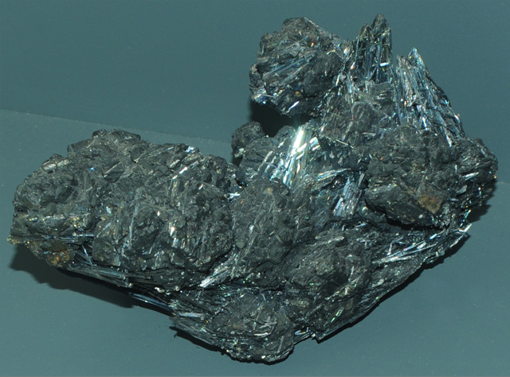

Jamesonite
|

| Pb4FeSb6S14
This sample of jamesonite is displayed in the Smithsonian Museum of Natural History. Jamesonite is an sulfide mineral of lead, antimony and iron with the composition Pb4FeSb6S14 . This sample is about 12x6 cm and is from Noche Buena, Zacatecas, Mexico.
Jamesonite is a minor ore of lead.
|
The Jamesonite forms a mass of fine, hairlike crystals.
|
The Jamesonite sample at right is about 6x6 cm and is from Cavnic, Crisana-Maramures, Romania.
|

|
|
This sample is stannite with jamesonite from San Jose mine, Oruro, Bolivia. It is about 14 cm wide. The duller, blockier crystals are stannite, an ore of tin. The shinier, needlelike crystals are jamesonite. |  |
Mindat: Jamesonite
|
Index |